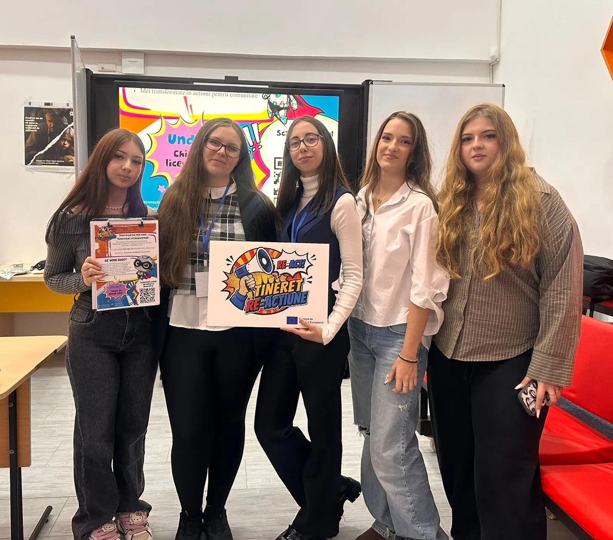
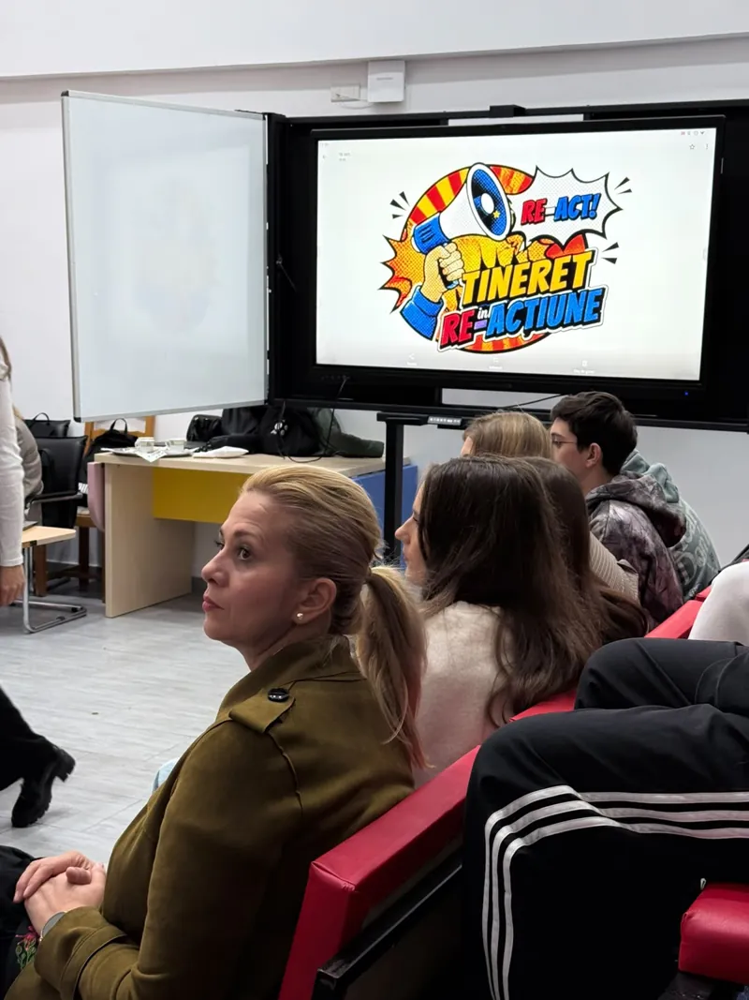
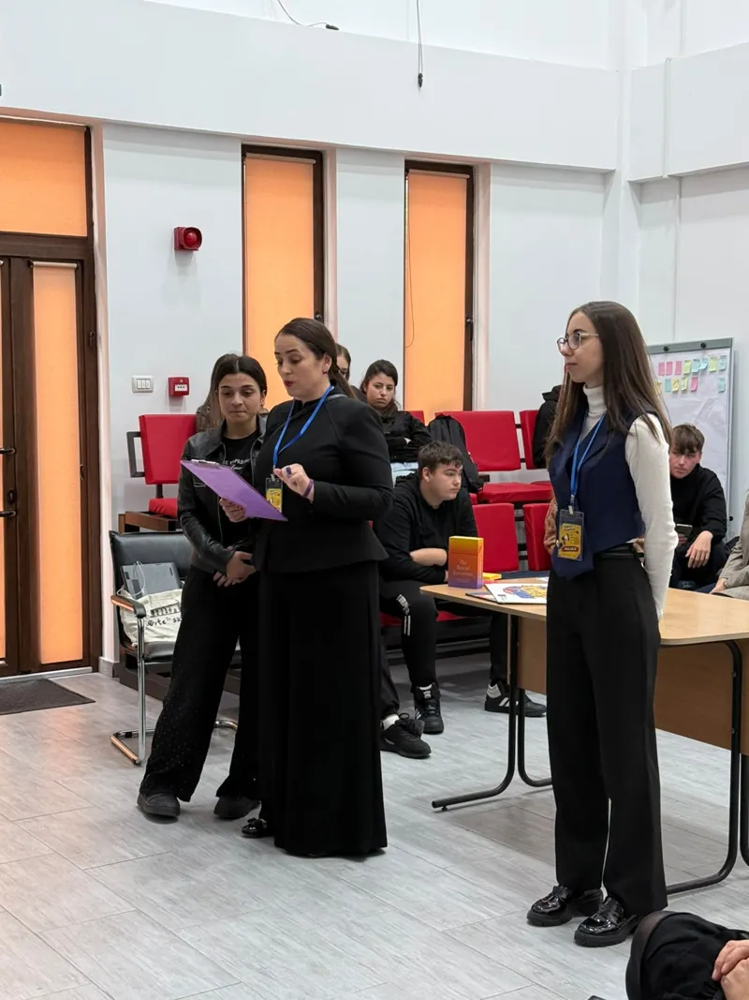
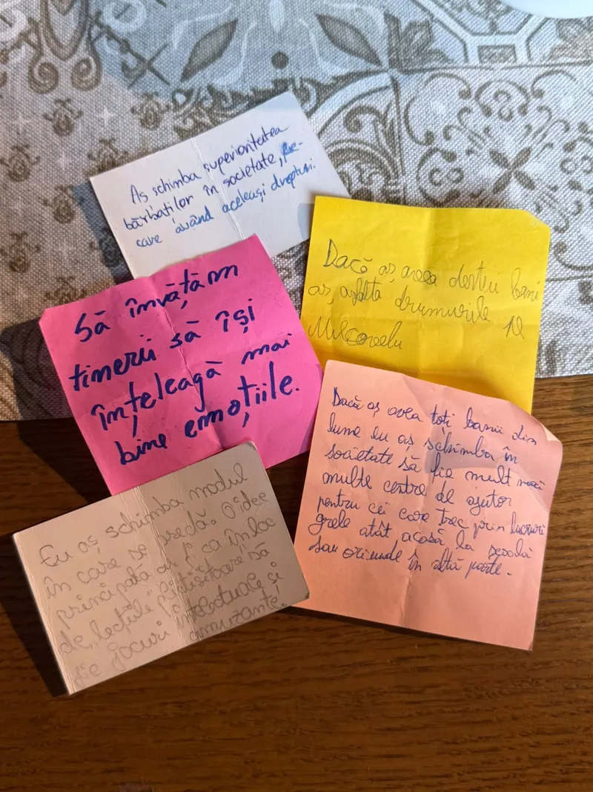
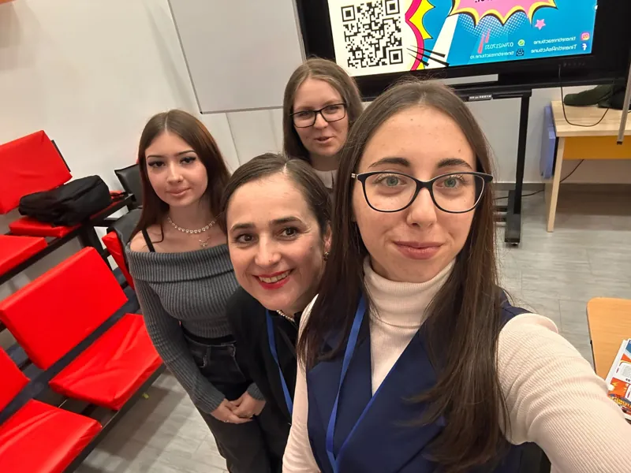

Vocea ta contează! Caravana „Tineret în (re)acțiune” merge în liceele vrâncene

🇷🇴 This article is only available in Romanian.
În plină Săptămână Erasmus (12-17 octombrie 2026), echipa de implementare a proiectului Erasmus+ Tineret în (re)acțiune a pornit la drum cu Caravana „Povestea ta / Vocea ta”. Misiunea noastră? Să ajungem în liceele din județul Vrancea, să aducem oportunitățile europene mai aproape de elevi și să arătăm că implicarea civică și voluntariatul pot fi cea mai faină aventură din liceu.
Unde am fost și unde ne îndreptăm?
Săptămâna a început în forță și cu multă energie din partea elevilor:
- Marți: Am povestit și am dezbătut idei alături de tinerii energici de la Liceul „Simion Mehedinți” din Vidra.
- Miercuri și Joi: Am fost în mijlocul elevilor de la Colegiul „Gheorghe Asachi” din Focșani, unde am descoperit tineri dornici să facă o diferență.
- Vineri (de la ora 11:30): Poposim la Liceul „Duiliu Zamfirescu” din Odobești! Îi așteptăm pe elevi să se alăture echipei noastre și să „voteze” pentru voluntariat și comunitate.
- Săptămâna viitoare: Caravana își continuă drumul către elevii din mediul rural care studiază la internatele vrâncene.
Pe lângă organizare și logistică, voluntarii noștri seniori devin ambasadori ai schimbării: răspund la întrebări, împărtășesc din experiențele lor și îi ghidează pe cei nou-veniți.


De ce să fii parte din „Tineret în (re)acțiune”?
Ne adresăm în special bobocilor și tinerilor abia intrați la liceu care vor să facă echipă cu alți colegi de generație pentru o schimbare reală.
Ce câștigi dacă te implici?
- Ghidaj pas cu pas: Echipa noastră îți va fi alături la fiecare pas.
- Proiectul tău, ideea ta: Vei avea șansa să concepi și să pui în practică propriul proiect comunitar — fie că e vorba despre școala ta, internat sau satul tău natal.
- Competențe pentru viitor: Vei învăța cum să vorbești în public, cum să lucrezi în echipă și cum să te faci auzit.
Transformăm tinerii din simpli spectatori în cetățeni activi, lideri civici și „influenceri de fapte bune”!


Despre proiectul Erasmus+ „Tineret în (re)acțiune”
Finanțat prin programul Erasmus+ (Acțiunea KA154 – Participarea Tinerilor), proiectul creează un spațiu civic de exprimare și acțiune dedicat tinerilor cu vârste cuprinse între 13 și 21 de ani.
Pe parcursul a 18 luni, 50 de tineri beneficiari vor trece printr-un program complex de educație non-formală, voluntariat și participare democratică. Este cadrul ideal pentru a învăța cum să identifici problemele din comunitatea ta, cum să dialoghezi cu autoritățile și cum să construiești soluții concrete.
Fii parte din schimbare! Înscrierile sunt deschise 🚀
Cunoști un tânăr cu energie, idei și chef de implicare? Sau poate chiar tu ești cel care aștepta o ocazie să facă primul pas?
👉 Apasă aici pentru a completa Formularul de Înscriere (se deschide într-o filă nouă)
👉 Alătură-te echipei Tineret în (re)acțiune și dă valoare vocii tale!
Vrei să faci parte din echipă?
Dacă ai între 13 și 21 de ani și vrei să schimbi ceva în comunitatea ta, te așteptăm!
GO! Înscrie-te! (se deschide într-o filă nouă)